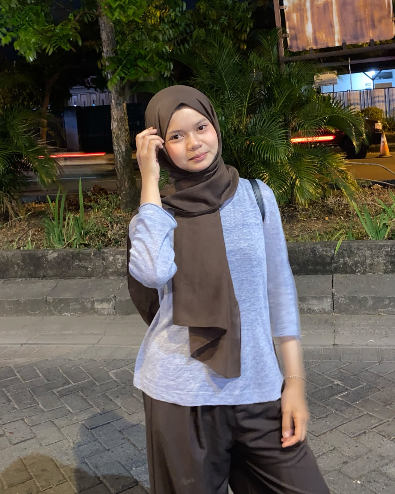

Adobe Photoshop
Image making & editing
↗PORTFOLIO PERSONAL 2026 / INDONESIA
Creative Designer &
Informatics Student
Halo! Saya Aprilia Dian, mahasiswa S1 Informatika yang memiliki ketertarikan pada dunia desain grafis, teknologi, UI/UX, dan pengembangan website.
Explore my work DESIGN
DESIGNA LITTLE ABOUT ME
01 / ABOUT
SUKOHARJOSaya percaya desain yang baik bukan hanya terlihat menarik, tetapi juga membuat sesuatu terasa lebih mudah dipahami.
Berangkat dari latar belakang Desain Komunikasi Visual dan kini menempuh S1 Informatika di ITB AAS Indonesia, saya senang menjembatani visual dengan teknologi. Saya terus mengeksplorasi cara mengubah ide menjadi pengalaman digital yang jelas, berkarakter, dan bermakna.
Sukoharjo, Indonesia
S1 Informatika
ITB AAS Indonesia
Desain Komunikasi Visual
Graphic · UI/UX · Web
TOOLS & WHAT I DO
02 / SKILLSPerangkat dan bidang yang saya pelajari serta gunakan untuk mengembangkan ide. Bukan peringkat—setiap skill masih terus bertumbuh.
Image making & editing
↗Vector & layout
↗Video editing
↗Interface prototyping
↗Visual communication
↗Digital experiences
↗Web foundations
↗Learning by building
↗SELECTED EXPLORATIONS
03 / PORTFOLIORuang untuk ide, eksperimen visual, dan hal-hal yang sedang saya pelajari. Klik karya untuk melihat lebih dekat.
NOTE Gambar di atas adalah placeholder visual. Klik kartu untuk preview; ganti URL gambar dan detail karya langsung di index.html.
OUTSIDE THE SCREEN
04 / HOBBIESHAVE A PROJECT IN MIND?
06 / CONTACTPunya ide, kolaborasi, atau sekadar ingin menyapa? Kirim pesan—saya senang mendengar kabar darimu.
Tambahkan alamat email di script.js
FIND ME AROUND
05 / SOCIALSSay hello
somewhere.
Akun media sosial belum ditambahkan. Isi username dan URL milikmu di
script.jsagar kartu mengarah ke akun yang benar.